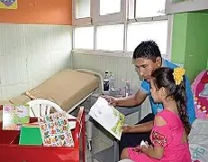

Atención inmediata las 24 horas con personal altamente capacitado y tecnología de punta.

Pediatría
Cuidado humano y especializado para niños desde recién nacidos hasta adolescentes.
Cirugía General
Procedimientos quirúrgicos con estándares internacionales de seguridad y calidad.
¡Bienvenido! Conoce todos nuestros servicios de salud.
Detalles de Nuestros Servicios
Atención inmediata las 24 horas con personal altamente capacitado y tecnología de punta, brindando soluciones efectivas en cualquier momento del día o la noche. Nuestro equipo está preparado para responder de forma rápida, precisa y segura ante cualquier necesidad que se presente. Contamos con especialistas en distintas áreas, comprometidos con ofrecer un servicio de excelencia y garantizar la satisfacción total de nuestros clientes. La disponibilidad permanente nos permite actuar de manera oportuna, evitando demoras y asegurando resultados de calidad. Gracias a la incorporación de herramientas tecnológicas avanzadas, optimizamos cada proceso y mejoramos la experiencia de atención. Supervisamos cada detalle con rigurosos estándares de calidad, manteniendo siempre una comunicación transparente y cercana. Nuestra prioridad es su tranquilidad, por eso trabajamos sin interrupciones, los 365 días del año. Confiar en nosotros significa contar con un respaldo sólido, profesional y moderno.
“Brindamos un cuidado humano, integral y altamente especializado para niños desde su nacimiento hasta la adolescencia. Nuestro compromiso es acompañar cada etapa de su crecimiento con atención médica personalizada, un entorno seguro y afectuoso, y un equipo de profesionales capacitados en el desarrollo físico, emocional y social de los menores. Creemos que cada niño merece una atención que inspire confianza, promueva su bienestar y fomente hábitos saludables que perduren toda la vida. Nos enfocamos en ofrecer diagnósticos precisos, tratamientos oportunos y orientación constante a las familias, garantizando así un cuidado completo y de calidad.”
“Realizamos procedimientos quirúrgicos bajo los más altos estándares internacionales de seguridad, calidad y ética médica. Contamos con un equipo multidisciplinario de especialistas altamente capacitados y con amplia experiencia, que trabajan con tecnología de vanguardia y protocolos estrictos para garantizar la seguridad y el bienestar de cada paciente. Desde las cirugías más simples hasta las de mayor complejidad, ofrecemos un entorno controlado, esterilizado y supervisado en todo momento. Nuestro compromiso es brindar una atención quirúrgica precisa, humana y confiable, priorizando la recuperación rápida y el mejor resultado posible para cada persona.”
Fundado en 1995, el Hospital El Alto Sur se ha consolidado como una institución médica de referencia, brindando atención integral y humanizada a miles de familias a lo largo de los años. Desde sus inicios, ha mantenido un firme compromiso con la salud y el bienestar de la comunidad alteña, ofreciendo servicios médicos de alta calidad, tecnología moderna y un equipo de profesionales altamente capacitados en diversas especialidades.
A lo largo de sus casi tres décadas de trayectoria, el hospital ha crecido y evolucionado, incorporando nuevas áreas de atención, programas de prevención y promoción de la salud, así como procesos que garantizan la seguridad y satisfacción de sus pacientes. Gracias a su constante innovación y dedicación, el Hospital El Alto Sur continúa siendo un pilar fundamental en la atención médica de la región, promoviendo una atención cercana, eficiente y con altos estándares de calidad.
Compromiso, empatía y excelencia son nuestros pilares fundamentales, los valores que guían cada una de nuestras acciones y decisiones. Nos comprometemos plenamente con el bienestar de cada paciente, ofreciendo una atención personalizada y responsable en todo momento. Actuamos con empatía, comprendiendo las necesidades, emociones y preocupaciones de quienes confían en nosotros, brindando siempre un trato humano y cálido. Además, buscamos la excelencia en cada servicio que ofrecemos, garantizando altos estándares de calidad, profesionalismo y mejora continua para alcanzar los mejores resultados y la plena satisfacción de nuestros pacientes y sus familias.
Nivel de Satisfacción de Pacientes
95% Satisfacción
Director del Hospital
Dr. Juan Pérez
"Nuestro compromiso es cuidar de ti con excelencia y empatía."